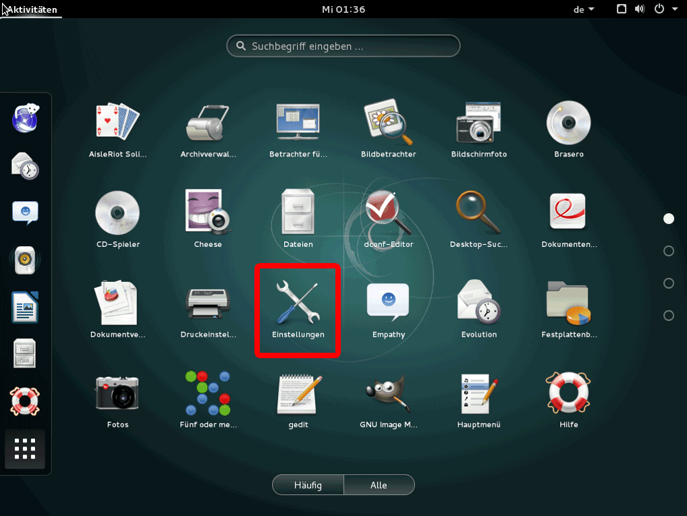
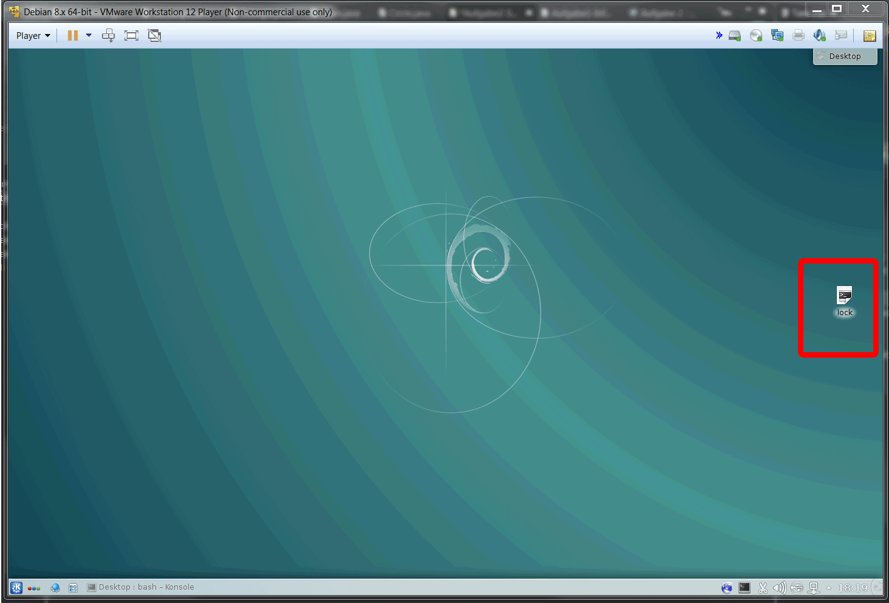

- a) Zeitrahmen Bildschirmsperre
Fünf Minuten sind ein guter Wert für die Aktivierung der automatischen Bildschirmsperre.
Bei einem geringeren Wert muss das Passwort öfter eingegeben werden, was erstens für den Anwender unerfreundlich sein kann, des weiteren entsteht dadurch für einen Angreifer häufiger die Möglichkeit, die Eingabe des Passwortes zu beobachten.
Zudem kann es vorkommen, dass bei einer geringeren Zeitspanne die Bildschirmsperre während dem normlen Arbeiten aktiviert wird, was sehr unkonforable ist.
Bei einem höheren Wert entsteht ein Sicherheitsrisiko, da ein Angreifer hier genug Zeit hat, sich unebmerkt Zugriff zum System zu verschaffen.
 -
b) Button Bildschirmsperre
Gezeigt werden zwei Alternativen. Bei beiden wird ein shell-Skript
ausgeführt, auf das eine Verknüpfung auf dem Desktop liegt.
Ein shell-Skript kann mit
touch skriptName
erzeugt werden. Mit
chmod skriptName +x
kann das erzeugte Skript ausführbar gemacht werden. Als letzten Schritt kann man nun per drag and drop das Skript auf den Desktop befördern und nun mit einem Mausklick starten.
Alternative 1:
Als nötiges Tool wird Xdotool installiert, mit welchem u.A. Tastaturanschläge simuliert werden können.
Das folgende Skript schickt den User direkt auf den Sperrbildschirm.
#!/bin/bash
xdotool key ctrl+alt+l

Alternative 2:
Das Tool XScreenSaver wird installiert. Anschließend wird mit
xscreensaver-command -lock
der Bildschirmschoner angezeigt. Mit einem Tastendruck gelangt man in den Sperrbildschirm.